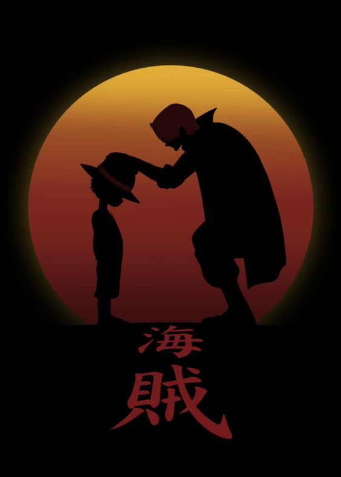
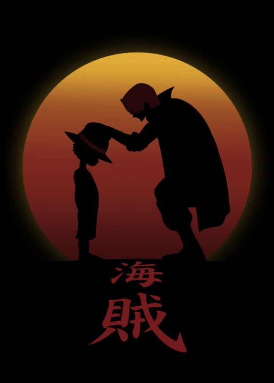

'Take Risk to make a brighter future'-Monkey D luffy
One Piece is a Japanese manga series written and illustrated by
Eiichiro Oda. It has been serialized in Shueisha's shōnen manga magazine Weekly Shōnen Jump since July 1997, with its individual chapters compiled into 100 tankōbon volumes as of September 2021.
Pirates are evil? The Marines are righteous? These terms have always changed throughout the course of history! Kids who have never seen peace and kids who have never seen war have different values! Those who stand at the top determine what's wrong and what's right! This very place is neutral ground! Justice will prevail, you say? But of course it will! Whoever wins this war becomes justice!
Chapter 1026: "The Pivotal Clash"As Luffy begins attacking Kaidou, he tells Momonosuke to use his dragon teeth to bite the Emperor; Momonosuke does so after grappling with his fear, causing the Emperor great pain. Luffy proceeds to loudly encourage Momonosuke and declare that the two of them will defeat Kaidou, and this is heard by the fighters on the Live Floor, giving the alliance great encouragement.
Kaidou and Momonosuke's flight through the air does result in the creation of storm clouds, which block the moon and force Inuarashi and Nekomamushi out of their Sulong forms, resulting in Jack and Perospero gaining the advantage in their respective fights.
However, Luffy and Kaidou then engage in a clash that splits the heavens, resulting in the moon becoming visible again. The two mink rulers then reactivate their Sulong forms and unleash finishing blows against their opponents.To Know about the latest Chapter
Click here
Kaido returns to his hybrid form, asking Luffy if there is a single chance he could win. Luffy replies, "As long as I'm alive, I have infinite chances." The two attack each other, black lightning crackling around them. The force of their punches creates a gap in the clouds, once again revealing the full moon.
Jack and Perospero look on in shock as Dogstorm and Cat Viper both launch Oden One-Sword Style attacks: Canine Cleaver and Feline Frenzy. The Lead Performer and eldest son of Big Mom both fall, finally out of the fight for good. Inuarashi stands above his opponent, unaware he has a spectator hiding behind him.
In the world of anime, some series have become known as “the essentials” over the years.
Although these lists usually include franchise favorites like Dragon Ball, Naruto, and Bleach, the series One Piece has been slowly amassing a huge following of dedicated fans in the anime community. Written by author Eiichiro Oda, the series has spanned over 20 years since its launch in 1997.
Covering the epic journey of Monkey D. Luffy and the crew of the Straw Hat Pirates, Oda has taken his fans on an unforgettable journey that is far from ending.
To date, the manga series has over 80 volumes (and nearly 840 chapters). As for the anime, which has kept up with the lengthy span of the manga, is now at almost 800 episodes, eight TV specials and 13 theatrical films. Once you become truly invested in this series, there is no turning back.
The Guinness Book of World Records recognized Oda for “most copies published for the same comic book series by a single author” in 2014. At the time of the recognition, One Piece had sold 320,866,000 units between December 1997 to December 2014. To date, manga sales now exceed over 416 million copies worldwide.
The journey of the Straw Hat Pirates has been author Eiichiro Oda’s lifework. His commitment to creating most of the art himself has led to a very demanding schedule. According to Kotaku, Oda stated that "…Mornings... I get up at 5am, and I work until 2am. It's normal for me to sleep from 2am to 5am." He also does not take off for holidays or vacations. That is insane!
It’s quite a change from Oda’s initial plans for the manga. In the past, he had stated that the manga was going to conclude after five years in 2002. He even has an ending already planned out! However, as he continued to develop more characters, battles, and adventures, the story has taken on a life of his own.
Many comic book and manga artists started their careers because of their passion for drawing and storytelling. Though their careers may not start in their preferred field, they eventually find their way to the occupation that they love. For author Eiichiro Oda, however, being a manga artist was his only choice in life.
According to an interview in the One Piece Blue: Grand Data File, Oda claimed to have wanted to become a manga artist at the age of 4 to avoid having to get a "real job". That’s what we call excellent life goals!
Growing up, Oda found inspiration in many of his childhood cartoons and manga. Among his favorites was Vicky the Viking, a 1970s animated television series that piqued his interest in pirate stories. However, in terms of manga, Oda was a big fan of author Akira Toriyama and his work including Dr. Slump and the hugely popular series Dragon Ball.
As Oda continued to work at Weekly Shōnen Jump, he began to further develop his skills as a manga artist. He worked as an assistant on Suizan Police Gang, Jungle King Tar-chan, and Mizu no Tomodachi Kappaman. He was also noted as a big influence while working on Rurouni Kenshin with artist Nobuhiro Watsuki.
After working on such noted projects and artists, Oda finally created the "Romance Dawn" one-shot story series. A storyline that Oda originally worked on in junior high school, the 1996 series depicted the character Monkey D. Luffy as the lead, with his signature straw hat and boisterous personality.
When Oda fully developed and published One Piece in 1997, he kept the name “Romance Dawn” an homage to the story’s roots. It serves as the title for the first chapter of the series and the first manga volume. "Romance Dawn" is also a running theme in the anime as well.
The Straw Hat Pirates have encountered a variety of pirate crews during their journey. Though none of them have ever donned the clichéd eye patch, many of these characters are modeled after popular tropes and characteristics we have come to know about pirates. To add to the depth of the characters, many of them are based around real-life pirates in history.
Most notably, the story of One Piece began with the execution of infamous Pirate Gol. D. Rogers who, on the day of his execution, challenged anyone to try to discover his treasured One Piece. This declaration and execution were based on French pirate Olivier Levasseur. In a final gesture, he tossed his cryptogram necklace into the crowd and advised that the one who solved it would have his treasure.
watch One Piece movie12 Stempede